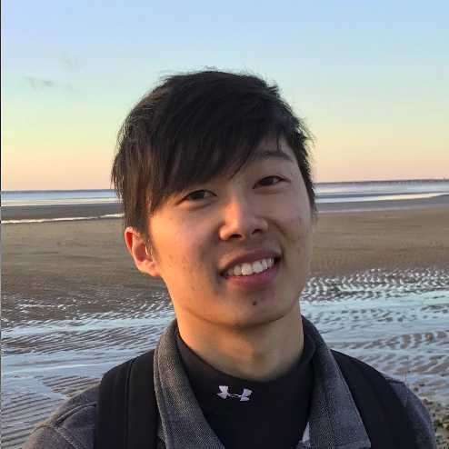

<main class="site-main" role="main">
  <div class="site-content inner-wide">

    <div class="cover hero">
      <div class="cover-bg" style="background-image: url('img/ZenMtKoyasan.JPG')"></div>
      <div class="cover-content">
        <div class="inner">
          <div class="hero-wrap">
            <span>
              
              <h2 class="hero-title fade-in">Ryan Louie</h2>
            </span>
            <hr>
            <p class="hero-text fade-in">
              Computer Science and Communications PhD student via
              Technology and Social Behavior Program at Northwestern.
              <br>
              Using methods from HCI, AI, and social sciences
              to design human-machine systems that detect and facilitate
              opportunistic interactions for social connection at distance.
              <br>
              ryanlouie@u.northwestern.edu
            </p>
          </div>          
        </div><!-- .inner -->
      </div><!-- .cover-content -->
    </div><!-- .cover -->

    <div class="inner">
      <p>
        <b>Bio. </b>In my graduate work, I aim to design, implement, and evaluate Cerebro, a computational platform for detecting and facilitating <i>opportunistic interactions</i>, or serendipitous moments in users’ daily lives for engaging in shared activities, to support social connection at distance. This purposed research is advancing my interests in designing intelligent human-machine systems, and my desire to empower people to build stronger social connections, increase social capital, and increase their emotional well-being. Advancing these goals requires taking an interdisciplinary approach; in this vein, my work draws on methods from HCI, AI, and social science to devise novel technological solutions to complex human problems.
      </p>

      <p>
        I am pursuing an interdisciplinary PhD in Computer Science and Communications through the Technology and Social Behavior Program at Northwestern University. I have had the pleasure of pursuing this research with Dr. <a class="inherit-link" href="http://dgergle.soc.northwestern.edu/">Darren Gergle</a> and my advisor, Dr. <a class="inherit-link" href="http://users.eecs.northwestern.edu/~hq/">Haoqi Zhang</a>.
      </p>

      <p>
        In addition to my research, I am a SIG (Special Interest Group) head for the <a class="inherit-link" href="http://dtr.northwestern.edu">Design, Technology, and Research</a> studio at Northwestern, where I've had the opportunity to co-mentor several wonderful undergraduate students while they practice to self-direct their own independent, Systems HCI research projects (Shoutout to Sanfeng Wang, Ryan Jeon, Matthew Wang, Andrew Finke, Jennie Werner, Allison Sun, Suzy Lee, Meg Grasse, Eunice Lee).
      </p>

      <p>
        <b>News.</b>
        <br>
        <span class="timeline-date">Oct 2019: </span>
        My work from Summer 2017 at Olin College was presented at ASSETS'20 in Pittsburgh: <a href="https://dl.acm.org/citation.cfm?id=3353788">"Leveraging Augmented Reality to Create Apps for People with Visual Disabilities: A Case Study in Indoor Navigation"</a>
        <br>
        <span class="timeline-date">Summer 2019: </span>
        I was a PhD Research Intern at Google Brain, where I built a suite of tools to enable humans to express high-level desires to a deep generative model for music creation; the tools not only increased users’ trust and control of the AI, but also contributed to a greater sense of creative ownership and self-efficacy. The software was open-sourced, and our paper was submitted to the ACM CHI’20 conference.
        <br>
        <span class="timeline-date">Sep 2018: </span>
        Honored to be recognized as a Design Research Fellow, where I have joined an interdisciplinary community of Design-based Researchers at Northwestern.
        <br>

        <span class="timeline-date">Apr 2018: </span>
        Jennie Werner and Allison Sun placed 2nd at the ACM CHI 2018 Student Research Competition for their work with me on developing the computational platform for expressing and executing Opportunistic Collective Experiences!
        <br>

        <span class="timeline-date">Sep 2017: </span>
        Moved to Evanston, IL to start my PhD at Northwestern University
        <br>

        <span class="timeline-date">Apr 2017: </span>
        I created a <a href="https://medium.com/@ryanlouie">Medium blog</a> discussing the personal values AI practioneers bring with them to do authentic work. In the process, I became a writer for the <a href="https://medium.com/towards-data-science">Towards Data Science</a> publication!
        <br>
      </p>

      <p>
        <b>Timeline.</b>
        <br>

        <span class="timeline-date">F2017 - now: </span>
        <span class="timeline-role">Northwestern Technology and Social Behavior PhD student</span>

        <br>
        <span class="timeline-date">F2013 - S2017:</span>
        <span class="timeline-role">Olin College of Engineering: B.S.</span> Engineering with a concentration in Robotics
        <br>
      </p>
    </div>

    <nav class="pagination" role="navigation">
      <span class="page-number">youralien.github.io</span>
      <!--   <a class="older-posts square dark icon-chevron-right" href="page/2/"><span class="screen-reader-text">Older Posts</span></a> --> 
    </nav>

  </div><!-- .site-content -->
</main><!-- .site-main -->


